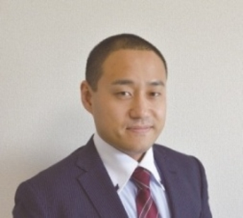

| 【２０代編】独身者の婚活リアル相談Ｑ＆Ａ！: 婚活のプロが語る本音の話！婚活を始めたら読む本 結婚活動 | |
| 結婚活動コーチングトレーナー 入倉秀 | |
| (2019) | |
【２０代編】独身者の婚活リアル相談Ｑ＆Ａ！
～婚活のプロが語る本音の話！婚活を始めたら読む本～
一般社団法人 日本地域活性化事業協会 代表理事
結婚活動コーチングトレーナー 入倉秀
定価１５００ 円( 税 込)

自分の悩みはみんなの悩み？
まず初めに...婚活というもの関わらせて頂き早１０年。出会いからスタートして７つの婚活のステップを提唱させて頂いておりますが...
出会い↓連絡先の交換↓デート↓告白↓お付合い↓プロポーズ↓結婚
婚活で最初につまずくのは、登竜門の出会いと連絡先の交換です。なぜつまずくのか？これは仕方ないと言えば仕方ないのですが...、
１、恋愛の経験不足からくるもの。
２、親世代も経験したことのない婚活という特殊なライフイベント
だと思っています。まず１については完全に責任転嫁できます。うまくいかないのは経験が少ないことと、経験がないからどう対応していいかわからず...。また恋愛というものは人から聞いたり学ぶというものではなく出来ること。そう無意識にできるものだと思い込んでしまっているものなのです。でも実際には、 婚活を頑張らないと結婚出来ない人と婚活を意識しなくても結婚出来る人がいるわけで...。 これは仕方ないことかなとも思っています。なぜ仕方ないのか？だって経験がないから今の時代恋愛というものは優先順位が低い独身者も多く...だって娯楽がたくさんありますからね！わざわざ無理して...嫌な思いをして恋愛をする必要性というものは価値としてはほぼないかもしれません。また自分の思い通りにいかない ...(笑) だって相手がいることですからね...。でも今の娯楽のほとんどは自分の意思で行うことが多く...。そういう意味では自由にいろいろと出来るわけで...。でも恋愛は正解がなく...もちろん間違いもなくという部分では扱いにくいこともあります。だって十人十色だし。１０人いれば１０通りの人生がありますからね。本題から少しずれましたが...、この恋愛の経験ですが、数をこなせばある程度方向性は見えてきますし、自分はこういう人間だからこういう恋愛が出来るというものはわかります。でもそういう経験が少ない時点で...嫌な思いや苦い経験をしてしまうとわざわざ自分が傷ついてまでやることでもないということに...。だって娯楽はたくさんありますからね！３０歳を過ぎてある程度仕事に余裕が出てきたら新しい趣味を始める人が増えますしね。
２ですが、これはもうどうしようもない。そもそも婚活という言葉が提唱されてまだ１０年そこそこですからもちろん独身者の親世代は婚活なんて意識して行ってきていません。親世代はお見合い結婚か社内恋愛が主流の日本の良き文化の時代ですから、そういう意味では今の子供世代の結婚については軽視している親御さんも多いのも事実です。だって自分たちはそこまで考えずに結婚した事実があるから。もちろん親だからこそ子供の結婚について真剣に悩んでいる親御さんもたくさんいます。でも経験したことがないからこそ適格なアドバイスや経験者として語ることもできない...。もっというと昔の仲人さんや縁談を持ってくるおせっかいおばちゃんをされていた方々も今の婚活事情については正直理解は難しい部分があるかと思います。かといって結婚活動について知識のある職業なんてまだまだメジャーじゃないですし、既存の結婚相談所については正直昭和のやり方を引きついでいるという事実は否めません。ただ近年では時代の進む速さが恐ろしくなってきており...生身の人間がこの時代の恋愛や結婚のあるべき姿についていけていない...というのが現実的な悩みに繋がってるかなと思います。
一般論なんかどうでもいい！結婚できればいいの！
一応私入倉もプロとして活動をさせて頂いておりますが...。今出ている恋愛や婚活の書籍は一通り目を通させて頂いております。やはり関わっている一人の立場として思うことは...
現場と書籍の話は近いようで遠い世界の話になってしまっている
という懸念です。もちろん私もこのように書籍を書かせて頂いていますので同じように読まれてい思われている方もいるかもしれませんが...。多くの著者は現状をヒアリングして書籍にまとめている。だからこそ誇大広告ではないですが、目立つ部分については強調されてしまい面白おかしくまとめられている部分がある。ということです。実際に独身者で自分の結婚について考えている独身者の立場からすると...、もっとリアルな話しを知りたいと思うのは普通のことですが、でも実際に普通に起こっている婚活のリアルをまとめても普通なのであまり盛り上がらないというのは現実的な部分かと思います。その点、書籍を書かれている方々は評論家や学校関係者、婚活に関わったことのある方がなど...ある意味何冊も本を書いているとありきたりなことは本の題材としてはウケが悪いのかもしれません。となると余計に婚活の現場で起こっている大多数のことよりも、少数のメディアがウケそうな話題や反響のありそうなことに触れるのはごく自然なことで...。でも実際に起こっている身の回りん婚活は？となってしまい...。そこはありそうでなかなかない婚活の話というのがやはり出回ってしまっているのが現実です。そもそも婚活なんて独身者であれば好き好んで婚活をしたいと思う方はほぼいないわけで...、出来れば楽して理想の異性と結婚したいと思うのが普通のことかと...。であれば現実的に結婚出来る婚活の話...という部分で同じ独身者の悩みに触れたのが本書になるわけです。
悩みが解決すれば結婚出来るのか？
ここで一つポイントがあります。
『恋愛・婚活の悩みが解消されれば結婚できるのか？』
答えはＹＥＳでもＮＯでもあります 。(笑 )
悩みが解消すれば結果として結婚出来ることもありますが、悩みがなくても結婚出来ない人はいるわけで...。でも悩みを理解して
【この悩みはこういうものなのか！！】
という理解や頭で出来れば
うまくいくきっかけになる可能性
も高くなります。
なので、本書の使い方としたら...
みんなの悩みを利用して自分が成功する
これが大切で す(笑 )
この表現公に伝えると誤解を招きますが...、まずは自分の幸せを第一に考えて行動してください。他人の事や異性のことは二の次です。まずは自分が幸せになることが結婚活動のゴールへの近道です。よくお見合いや婚活イベントにい参加して連絡先を交換しても...人によっては声をかけられたから...断るのも悪いと思って...。またデートを重ねて相手のことを思うとなかなか断れない...などという相談をよく頂きます。これは正直いって
時間の無駄
です！失礼な言い方は十分承知しています。でも相手としても可能性がほぼないのであればはっきりと言ってもらったほうがけじめがつけやすいこともあります。また
うまくいかない人のパターンとしてマイナスや嫌なことばかり考えてそちらの行動をしてしまう
ことです。なのでご相談を頂いたりサポートさせて頂く方にはそこは口酸っぱく...自分の幸せを第一に考えて行動する。その相手にとっても先に自分が幸せになってその後異性でも紹介してあげたほうがよっぽど効果的かと思いますしね。
ですが実際にはそんなことを面と向かって相手には言えませ ん(笑) でも大切な考え方ですのでこの場でお伝えさせて頂きました。本書は何度も言いますが、みんなの悩みやなかなか行動できない内容を理解することによってご自身のきっかけになってもえらえばと思います。
実は本書に掲載させて頂いた質問は同じ質問をたくさんの方から頂いていることもたくさんあります。
自分の悩みはみんなと一緒
逆を言えば
これから自分も悩む可能性があることを先に知っておくとダメージが少ない！
ということもあります。もちろんすでに婚活や恋愛で悩みを抱えている場合は本書がきっかけになるかもしれませんしね！
恋愛に正解も間違っているもない！参考が一番
さて、本書を読んで頂くにあたり注意してほしいことがあります！それはこのＱ＆Ａのアンサーを書かせて頂いている 私入倉はそれなりに...１０年以上は婚活に携わっており、婚活イベントも１１００回以上運営していますし、お見合いも１０００回以上立ち会っています。悩み相談も何百人と対応させてい頂いておりますし、ご成婚の何百組も出ています。
でもこれは単なる実績や経験であって正解ではありません。
もちろん婚活未経験の方やまだ始めて少ない方からしたら確率論として成功しやすいアドバイスはできるとは思います 。( 謙遜して書いていますがかなり自信はあります。 笑 )
ですが私入倉のアンサーが実際にあなたの恋愛において正解になるかというは正直違います。そもそも恋愛に答えはないので正しいとか間違っているとかは判断するのはあくまでも自分なのです。自分がいいと思えばそれは正解ですし、でも社会的に間違っていると思われるような内容であったとしても...。だからこそ本書は参考程度にご理解頂くのがベストです。また他の書籍でたまに見るのが恋愛や婚活を断定した書き方をしていることがありますが...、私はどちらかというとその考えは否定的です。もちろん占いの方に決められていることや統計的にわかることであれば断定に近い表現は良いかとは思いますが...。でもあくまであなたの人生ですし、
あなたの判断がこの後の結婚生活のカギを握ってくることは事実です。その際に事実から目を背けず自分で決断して後悔のない選択をする練習をいまのうちからしてもらいたいと願っています。
なぜこんなことが必要か...それは今の時代離婚がオープンな時代と言われ、性格の不一致を始め離婚するきっかけはたくさんあるからです。もちろん結婚生活が出来ないのであれば離婚も視野に入れる必要はあるかと思います。でも改善してなんとかうまくやっていけるように対応できる力があれば...それは末永く幸せな家庭生活を築いてもらいたいと願っています。
『Ｑ＆Ａ』
～目次～
Ｑ．どんな人が好きなのかわからなくなってしまいました。２０代 女性
Ｑ．運命の出会いってあるんでしょう か... 。昔はカンタンに恋愛できていたのに今はすごく難しく感じてしまって、自分にはもう恋愛はムリなんじゃないかな？って思ってしまいます。 ２０代 女性
Ｑ．親の教え？が厳しくて好きな人が出来たことがありません！イケメンは好きです。 ２０代 女性
Ｑ．頭でっかちになりすぎて恋愛に没頭できない。石橋をたたきすぎて渡る前に疲れる。 ２０代 女性
Ｑ．サバサバしていて男子っぽくてたぶんモテるタイプじゃない。 ２０代 女性
Ｑ．人に興味を持つことができないので、どのように興味を持てば良いか。 男性
Ｑ．周りが結婚している人が増え正直あせりを感じている ２０代 男性
Ｑ．初めて参加して状況がわからない感じでしたが、自分を見直す機会になりました。友人が次々と落ちついていく様子に焦っています。 ２０代 女性
Ｑ．なかなか会話が盛り上げられない。これといった趣味がないので会話が続かない ２０代 女性
Ｑ．アドリブでこたえるのが苦手なので聞かれたことに対してすらすらと言えない。相手の話しを聞いている時は相手の顔を見ることができるのですが自分が話す時は相手を見てしゃべれない。 ２０代 男性
Ｑ．自分がわからない話題や興味の持ちにくい話しがあった時にどう反応すれば良いかわからないです。 ２０代 男性
Ｑ．イベントに来ていて自分が『いい な... 』って思える人ほどあまりふり向いてもらえませ ん... 。話を盛り上げる以外に何か良い方法はありますか？ ２０代 女性
Ｑ．ステキな笑顔になるのが難し い... ！！ ２０代 女性
Ｑ．相手も恋活しているとわかりやすいけれども恋活しているのかわからない男性に女性から積極的にいってもいいかな。 ２０代 女性
Ｑ．あせってしまう。ねっしやすくさめやすい。イヤな所がよく見えてしまう。さみしくなる。 ２０代 女性
Ｑ．自分ことを話す際にどのくらいの長さで話す方が聞く側にとってよいのか等。恋活に参加する際には考えてしまったりします。 ２０代 女性
Ｑ．ＬＩＮＥで仲良くなるのが難しいです。自分が連絡手段としか使わないので。 ２０代 女性
Ｑ．話がはずまない。盛り上がりにかける。電話番 号( ＬＩＮ Ｅ) を聞いても会話がはずまず。食事もしくは映画などの外出までさそえない。 ２０代 男性
Ｑ．婚活後、相手との連絡のしかた、失敗せずに連絡をしたいです。 男性
Ｑ．ＬＩＮＥ交換後お食事に誘ってもらえるのはお会いするきっかけにもなりうれしいが会う前から友だちではなく彼女のような内容で接せられると対応に困ること が... 。まずは相手を知る時間がほしいです。
Ｑ．１回目のデートで印象を良く見られるにはどうしたらいいですか？ ２０代 男性
Ｑ．連絡先を交換し１回目のご飯に誘えますが２回目のお誘いの仕方が上手く出来ないです。 ２０代 男性
Ｑ．出会いはそれなりにあります。が発展しません。お付合いに進展されるにはどうすれば良いのでしょうか。 ２０代 女性
Ｑ．友達にはなれるけどその後の発展がな い... 。すぐ茶化してしまいま す... 。はずかしさをとりはらいたいです。どうしたらよいでしょうか？ ２０代 女性
Ｑ．自分が良いと思った人からは好かれず、そうでもない人からの誘いがあり上手く行かないことが多い。 ２０代 女性
Ｑ．いいと思っても相手からなかなか良いお返事がいただけません。 ２０代 女性
Ｑ．経済的な面、男性の職業で結婚しても大丈夫か？お付合いしても大丈夫かな ど... 。なかなか自分の好みの人に出会えない（イベントに行っても同じ人ばかりなど） 女性
Ｑ．相手の年 齢( ２０代、３０代、４０ 代) によって直ぐに結婚をもとめるものでしょうか？
Ｑ．れんあいコミュニケーションがむずかしい！！ ２０代 女性
Ｑ．悩みは、なかなかお互いが良いなと思える恋愛にならないことです。
Ｑ．フラれた時・食事に誘って断られた 時... 落ち込みます が... 、どうやって立ち直ればいいですか？ 男性
Ｑ．ご縁があってお付合いが始まった時、結婚も視野に入れたいと考えています。ただ、その時に例えば自分自身や家族等にハンデがあった場合、その事をいつ相手に伝えれば良いでしょうか？ ２０代 女性
Ｑ．これから結婚できるか な... 不安です。でも活動しながら希望すてないで頑張ろうと本日思えました。 ２０代 女性
Ｑ．結婚にこだわりがなく、将来年を取ってから一人ではさみしいので親しい友だち感覚でおつきあいできる人がいればいいかなぁと思います 女性
※Ｑ＆Ａの注意点
本書での回答については、年代及び回答の仕方や文字の状 況( 質問用紙は手書きにて記載されてい る) により入倉が独断と偏見で質問者の状況から回答をさせて頂いております。また場合によっては、質問者が入倉で特定した上でのアドバイスも中には含まれています。なので、回答によっては一般論からかけ離れている可能性もあります。ご了承ください。ただ本書で伝えたいのは、
学者さんや評論家の方々が理解しがたい細かい部分の悩みから一般的な恋愛相談までの実情
をお伝えできればと思い構成させて頂いております。一般的に出回っている恋愛書籍・婚活書籍とは少し違った角度で編集させて頂いております。逆に一般書とは違い尖りすぎている回答もあり参考にならない部分も出てくる可能性もあります。その場合は参考程度にご理解頂ければと思いますし、
百聞は一見に如かず
ではないですが、他人の悩みを自分目線でどう考えるのか？もしくは入倉の回答からどう思うのか？という部分も楽しんで頂ければと思います。自分の悩みと同じ悩みがたくさんあったり、こういう悩みもあるのか？という部分から新たな婚活という理解をしてもらえればと思っています。
くれぐれも本書を鵜呑みにせず、自分は自分、他人は他人！という目線も残しつつ事例として理解してください。
最終的にご自身の恋愛や婚活・結婚はご自身が良いと思ったらそれが正解です！回りに何と言われようと！陰ながら応援しています！
出会Ｑ＆Ａ
Ｑ．出会いがない ２０代 女性
Ａ．今の時代なかなか出会いがないですよね...。私入倉も独身の時は毎日のように素敵な異性が現れないかなと願ってしましたが...日常生活には全く出会いがありませんでした。これって現状として多くの方が直面している事実だと思います。でも出会いがないと嘆いているだけでは...時間ばかり過ぎてしまいますよ...。活動するなら今がベストタイミングです。年齢は関係ありません。 恋愛したいな結婚したいなと思った時がベストタイミング です。相手から来てくれるのを待ち続けるか？自分から積極低に行動するかは自由です。もちろん結婚しないという選択も間違いではありません。ただご自身が思い描く将来がどうかというのが非常に大切です。ご自身の人生設計をしてみて何歳までに結婚したいとかがあれば行動は積極的になるかもしれませんよね。一人で行動するのことがハードルが高いなら一緒に頑張りましょ う (^O^ ) ／応援しますよ！
Ｑ．どんな人が好きなのかわからなくなってしまいました。２０代 女性
Ａ． 好きな人が分からないことが普通ですので心配しないでください ね。そんなときはとりあえず異性とデートに行ってみて『悪くなければとりあえずお付合い』をしてみてください。なかなかうまくいかない人の共通点の一つに頭で考え過ぎてしまう行動ができない...ことが多いです。またお付合いについてもご自身で勝手にハードルをあげてしまい全然付き合えない...という方が増えています。結婚活動ではとにかくお付合いをしないことには結婚は出来ないかと思います。 【出会い→連絡先の交換→デート→告白→お付合い→プロポーズ→結婚】 の順番でゴールされる方が一般的ですのでまずは行動あるのみでとりあえず付き合ってみることは大切です。『そんな簡単に付き合えない...』と思うかもしれませんが大丈夫！ダメなら別れて他の人を探す事ができますからね。でも行動しないことには何も変わりません。ずっと同じですよ。
Ｑ．運命の出会いってあるんでしょうか...。昔はカンタンに恋愛できていたのに今はすごく難しく感じてしまって、自分にはもう恋愛はムリなんじゃないかな？って思ってしまいます。 ２０代 女性
Ａ．運命の出会いがあるかないか...個人的な意見としてはあると信じています。ですが 結婚活動では運命の出会いは自分で掴む方が早い です。待っていても来ない可能性もありますからね（来たとしても気付かない人もいて非常にもったいないです）ではどうやって自分で掴むのか...それは準備を万全にしておくということです。もう人生練習だと思って異性と会話を楽しんだり、 練習だと思ってデートしたり、練習だと思ってお付合いしてみてください。 歳を重ねると人の悪い癖で行動が若い時に比べてしにくくなります。なので、いつ運命の出会いがあってもいいようにどんどん練習だと思って積極的に行動してみてください。そんなこと言っても...と思うかもしれませんが生理的に受け付けない以外はどんどん異性と交流してみてください。この練習を重ねると必ず運命の出会いが待っていますよ。もうすでに何人もの人がうまくいったところを見てきたので確実です ＼ (^o^ ) ／また難しく思ったら難しい現実になってしまいます。簡単だと思えば簡単な現実になります。そこはプラスに考えて幸せな結婚生活をイメージして活動してみてくださいね。
Ｑ．親の教え？が厳しくて好きな人が出来たことがありません！イケメンは好きです。 ２０代 女性
Ａ．同じようなご質問や悩みを抱える２０代の方が多いのですが...。ある統計ですと２０代でも一度もお付合いしたことが無い人が全体の４割程度いるというのを見た事があります。でも実際には半分以上はいるんじゃないかなと私は勝手に思っています。ということはそれが普通です。よくドラマやマンガでそういう好きとか運命みたいな話が盛り上がりますが...。実際に『好き』という感覚は人それぞれで目に見えません。だから良いのです。自分なりの好きを探してみてください。もちろん好きがわからなければ 結婚活動では『一緒にいてもいいな』『この人なら生活しても自分らしくいられるかも』という異性を探してみて ください。もちろんイケメンでもいいかと思いま す( 笑。あぁ、イケメンがいいのか... 笑) で最後に厳しい一言を...もう２０代ですので親の教えということは忘れてください。今が一番大切です。過去の事なんてもう変えられません。変えられるのは今しかなく、この今があなたの将来・未来を形成します。もう自分のことだから親のせいにはせず自分に責任をもって行動してください。今からでも遅くはないです。ぜひイケメンを探してくださいね 。(笑) 行動あるのみ！充実した結婚生活を送れるように一緒に頑張りましょう！
Ｑ．頭でっかちになりすぎて恋愛に没頭できない。石橋をたたきすぎて渡る前に疲れる。 ２０代 女性
Ａ．一発回答...まずは行動してみてください。解説...ご自身でもわかっているかと思いますが...、まずは行動するしかないかと思います。でも考えちゃいますよね。ふられたらどうしようとか嫌われたらどうしようと...。みんな同じです。でも今の平成の時代では自分の人生は自分で何とかしないと何も始まりませんよ。誰もあなたの人生を面倒見てくれないです。今行動するのか？考え過ぎてしまい行動できないのか...？ここで大きな差が出てしまいます。本気で結婚をしたいのであれば自分を変えてみませんか？実際にですが...意外と活動してもそれほど苦じゃないですよ！とにかく異性と会う習慣から始めて下さいね！山梨恋活コミュニティのイベントは食事がメインですので、まずは食事に来たらたまたま異性がいたくらいの感覚でお越しくださいね～ ＼ (^o^ ) ／
Ｑ．いい人がいない
Ａ．いい人がいない...というのは婚活イベントでしょうかね？ご自身の回りでしょうかね？ちょっと質問頂いた方の回りの状況はわからず答えられないので婚活イベントについてお答えさせて頂きますね。ちょっと私の感覚としてですがね...。いい人って婚活イベントにいないと思います。誤解を招くのであれですがそもそもいい人っていう判断で婚活イベントって成り立ってないかと思います。 人と人とのご縁ですから十人十色な部分もありますし人って比較出来ないし良い悪いとかの判断も出来ない と思います。そもそも人は比較するものじゃないですからね。その人の個 性( 長所もあり短所もあ る) でその人のオリジナリティがありますからね。そこの部分と自分が一緒にいられるかどうかが恋愛・結婚へのポイントだと思います。もちろん好みはありますよ。好みの異性がいないというのはもちろんイベントの選び方とか違う方法...例えば合コンとかお見合いとかを利用するのもいいかと思いますよ。婚活イベントは異性と出会う手段の一つでしかなくこれが全てではありません。主催者の私入倉があまり言ってはいけないかとおもいますがね ...(笑) でも事実ですので素直にお伝えしますが...。人によって出会い方はいろいろあると思いますのでいい人がいな い( 好みの異性がいな い) のであれば違う方法をぜひ模索してみてくださいね！応援しています！好みについてですが、たまには意外な異性と交流してみるのも新しいご自身の発見につながると思いますのでおすすめです
Ｑ．何が原因で彼ができないのかわからない ２０代 女性
Ａ．何で彼氏が出来ないんでしょうかね...？私入倉も彼女がなんでできないのか悩んだ時期がありましたよ...。今の生活状況がわからないので一般的な回答をさせて頂きます ね (^O^ ) 同じ悩みの方の半数くらいは...出会いがあれば彼氏が出来ます。これ意外かもしれないですが、実は単に出会いがないから彼氏が出来ない...何が原因とかではなくただご自身の出会いの機会が少ない人がいます。 ２、３カ月くらい集中して婚活イベントや合コンや紹介などの優先順位を上げて行動してみてください。毎週のように異性と会うと効果が出る方が多い です。もし当てはまっているようであればまずは行動してみてください。出会いはあるのに...という場合は、恋愛と結婚の勘違いやご自身が異性から見られているタイプを誤解されていてうまくいかない可能性があります。婚活セミナーや 山梨恋活コミュニティの女性限定参加者スタッフをおすすめします！どんどん彼氏が出来ていますから...
Ｑ．さばさばしすぎてモテない ２０代 女性
Ａ．私入倉としては、女性のさばさばってモテると思うのですがいかがでしょうかね？でもご自身で感じるものが何かあるということでしょうね...。 男性目線と女性目線って意外と異なる部分が多く ...例えば代表的なのが...ぽっちゃり女子です。山梨恋活コミュニティのイベントでも開催しているのですが、女性はどちらかというとスレンダーでスラッとしているモデルさんみたな体型を望まれる方が大多数かと思うのですが、男性目線だとぽっちゃり女性も引けをとらず結構人気があったりします。『私の包容力ハンパないよ～笑』くらいの方が男性からするとモテる事も頻繁にあります。で今回のサバサバも男性受けはしなくはないかと思います。もしかしたらサバサバしているのと同時に恋愛には奥手タイプなのかもしれないですね...。なかなか自分がいいなと思っても積極的にアピールできないのかなと思います。男性によってはネチネチとした関係よりもさっぱりとした感じを望んでいる人もたくさんいますからね...。気になる異性がいたら『私どう？さばさばしているけど付き合ってみる？』くらいのさっぱりとアピールするのもありかと思います。サバサバしている女性って男性との関係性をはっきりとしたい方が多いかなと思うのですが、じれったい関係よりも白黒はっきりしたいなら...。もうご自身の気持ちを伝えちゃうのが最短かと思います。また独身の異性に会っていますか？ よく誤解されている女性の多くは何か原因があるのではなく短に異性と出会いがないからモテないと勝手に勘違いしている女性が非常に多く もったいないです。とにかく出会ってみてそれでもうまくいかなければまたご相談くださいね。大丈夫でもご自身が思っている以上に意外とモテますから一緒に頑張りましょう～ ＼ (^o^ ) ／
Ｑ．サバサバしていて男子っぽくてたぶんモテるタイプじゃない。 ２０代 女性
Ａ．サバサバしていてもモテると思うのは私入倉だけでしょうか？男性目線ですが、そういう女性も好きなタイプとして男同士の話しだと出たり聞いたことありますよ。サバサバしていると 普通の恋愛と言うよりはまずは友達になってから会う回数を増やしつつ距離を縮めながらお互いの関係性を構築していくと良い かもしれないですね。サバサバしている女性ってどちらかというと男性も声かけやすいですが、でもトゲトゲしいサバサバ感を出されていると男性はあまり連絡に躊躇しちゃうかもしれないですね。気軽に今度ご飯でも食べに行こうよって感じの雰囲気で距離を縮められると早いと思いますよ。私入倉の周りでもサバサバした女性は知り合いでいましたが、今は皆さん結婚していますよ～ （ *^_^ * ）そこはモテないとは思わず一緒に頑張りましょうね！まずは出会いを増やして友達からのスタートがおすすめです！
Ｑ．人に興味を持つことができないので、どのように興味を持てば良いか。 男性
Ａ．個人的な意見ですが...、興味がないなら興味が無くて良いんじゃないですか？無理して頑張ろうとしてもモチベーション上がりませんし、そこを頑張ってもご自身にメリットがなければ続かないですからね...。今の時代お一人様という選択もありですからね。私入倉は婚活・恋活イベントを主催したり合コンセッティングしたりお見合いをサポートしたりしていますが、無理に進めはしないです。結婚したければ行動すれば何とかなりますし...。でも一番良くないのが結婚するはあまり無いけど周りが結婚しているから結婚してもいいかなって思っていると...なかなかうまくいかず結婚活動が悪い印象になってしまいます。中途半端が一番良くないです。もし興味を持ちたいと心底思っているのであれば、 出会った人全員の良いところを３つ探す習慣 を身につけてみて下さい。これ意外と効果がものすごいあります。人の良いところが目にいくようになれば人に興味を持つことが自然に出来るようになります。ぜひ試してみて下さいね。
Ｑ．周りが結婚している人が増え正直あせりを感じている ２０代 男性
Ａ．結婚式に招待されたり報告をもらうと正直焦りますよね...。私入倉も同じ経験しましたもん。オレやばいかも...。結婚したいけどそもそも相手いないし...的な ...(笑) 正直焦っても何も始まらないのが現実ですがね...。そしたらまずは自分がどの段階か見極めると良いかもしれません。私入倉拙著【結婚活動必勝マニュアル】で書かせて頂いておりますが結婚活動では... 【出会い→連絡先の交換→デート→告白→お付合い→プロポーズ→結婚】 の段階があるとご説明をしています。焦る...やばいと思って何がやばいのかと言う意味で状況分析が大切です。そもそもその段階で異性とお付合いをしているのであればプロポーズに進展すればゴールは近いですが、特定の異性はいないし...日常生活で出会いがない...と言う場合は一番左からのスタートになります。出会いが無いのであればどうやって異性に出会うか考えてみて下さいね。友達に紹介してもらうもいいですし婚活イベントに参加することも良いかと思います。一つずつ階段を登るようなイメージで右に進んでいってくださいね！
Ｑ．初めて参加して状況がわからない感じでしたが、自分を見直す機会になりました。友人が次々と落ちついていく様子に焦っています。 ２０代 女性
Ａ．ご参加ありがとうございました。よく初参加の方に言われるのが...イメージしていたものより全然違った...良い意味で ...(笑) と言われます。おそらく婚活や恋活イベントのイメージというとテレビやメディアの情報が強く...近年ではお見合い大作戦のような大人数で回転寿司の自己紹介やみんなの前での愛の告白などというちょっと恥ずかしいイメージがやはり強いです。でも 山梨恋活コミュニティのイベントは...ただ食事をして少し話して気付いたら終わり ...(笑) という感じでしょうか？ 普通に食事に来たらたまたま異性がいたくらいの軽い感覚 でまずは異性に会う習慣を身につけて頂けると良いかと思います。今の時代なかなか同年代の異性と話すことが少ないので...始めはうまくいかないことが多いですが、慣れます！慣れてしまえば大丈夫です！一緒に頑張りましょうね～ （ *^_^ * ）
連絡先交換のＱ＆Ａ
Ｑ．人と話すコツやネタが思いつかないです ２０代 男性
Ａ．これは練習で何とかなります。私も婚活１年目の時は話す事がなく会話が続かなかった
苦い経験があります。異性がどんなことに興味があるのか？直接聞くことも大切ですし、事前にインターネットで調べておくことも大切です。『最初のトークカード』のネタを覚えておくのも効果的ですよ。
Ｑ．話題が見つからない ２０代 男性
Ａ．異性とのデートの時という解釈でお伝えさせて頂きますね！話題がない...ということは逆を言えば、何でも話せるということじゃないですか？相手のことがわからないから話題が見つからないって思っているでしょ？だったら片っ端から異性に聞けばいいかと思います！質問をしてみましょう！例えば、仕事や趣味・マイブームや好きな食べ物などの王道の質問から恋愛・結婚という部分では将来のイメージや結婚生活などを聞くのもありですよ。結婚活動において異性との結婚生活をイメージ出来ると可能性が高くなります。例えば、子供は何人ほしい？とか、共働きか専業主婦？とか、新婚旅行はどんなところに言ってみたい？とか、もちろん気が早いよと思われるかもしれないですが異性といかに共通点や考え方で共感できるかどうかが大切です。もちろん異性との会話がなれていないとなかなかうまく話せませんからね。とりあえず練習あるのみです。どんどん異性と関わって会話をする努力をしてみてくださいね！
Ｑ．なかなか会話が盛り上げられない。これといった趣味がないので会話が続かない ２０代 女性
Ａ．一発回答...相手に興味を持つことから始めましょう。解説...まずご自身の趣味についてはないのなら仕方ないかと思います。また今現在の趣味じゃなくても答えてＯＫですよ！例えばこれからやってみたいなこととか興味があることを話すのも趣味の話しで大丈夫です。で一発回答の興味を持つですが...。そもそも相手に興味を持たないと会話が上の空になってしまいお互いしっくりこないと思います。どんな相手であれ ...( もちろん外見的にタイプじゃなくても... 笑) まずは相手に興味を持って接する練習をしてみましょう。人は外見じゃない...ということを聞くかと思いますが、結婚は日常生活そのものですのでいくら外見がよくても生活力が無かったり合わなければ長続きは出来ません。だからこそどんな相手であれまずは興味を持つくせを付けて下さい。相手に興味を持てば相手も自分に興味を持ってくれます。そこから恋愛が始まるかもしれないですからね。あと相手に興味を持てば相手のことが知りたいと思いませんか？そこからいろいろ聞く事は出来ると思います。だってご自身が好きな芸能人やタレントさんて興味がわいたらいろいろと知りたいと思いませんか？まぁ、相手は芸能人ではない...と思われるかもしれませんが、相手のことを知らないからこそいろいろと質問をしてみましょう。その際に興味がなければ盛り上がりませんが、まずは自分から興味をもって相手の話を聞いてみて下さいね！
Ｑ．職場の人とのコミュニケーションが少ない。 ２０代 女性
Ａ．少ないと言うのは、挨拶くらいですかね。職場の人と関わりたいのでしょうか？もしご自身でもっとコミュニケーションを取って関わりたいと思っているのであれば相手も同じ様に思っている可能性はありますので積極的にコミュニケーションを取ってみて下さいね。ですが、相手もどう声かけていいのかわからないと思います。だからこそまずはご自身から声かけてみて下さい。最初はどうでも良い雑談からでいいかと思いますよ。今の時代ですと雑談する書籍とかも販売しているみたいですのでぜひ参考にしてみてくださいね。
Ｑ．人との話しのきっかけを作る方法を知りたい ２０代 男性
Ａ．確かにきっかけって大切ですよね...。私入倉もよくきっかけで悩んだことありました。きっかけって簡単そうで意外に難しいんですよね...。で終わってしまうと相談になりませんからね ...(笑) 私入倉が異性と話すときのきっかけ作りで意識したことが...。ずばり 共通点を探す ことです。もうどんな共通点でもいいです。とにかく共通点を見つけられると会話がしやすくなりますよ。例えば、住んでいる地域や仕事、趣味、マイブーム、好きな食べ物などプロフィールシートに書いてあるようなことは一通り聞くようにしていました。後は、今日の天気とか美味しいお店の話しとか、イベントに参加したきっかけとか...。とまぁきっかけは 会話のネタがあるかないかが大切 です。でそのネタの選定が非常に大切になりまして... 異性ウケしない内容と異性ウケする内容がありますので注意 が必要です。詳細は私入倉拙著『最初のトーク術マニュアル』に詳しく書いてありますよ～ ＼ (^o^ ) ／
Ｑ．ネガティブになる ２０代 男性
Ａ．私入倉もよくネガティブになります。１週間に１度は死にたいと思うくらいネガティブで す(笑) 。私入倉も婚活を５年ほどしましたが、最初の１、２年はほぼ毎日ネガティブだった思い出がありま す(笑) だって、婚活イベントに参加してもうまくいかないし、連絡先は交換出来ないし...、声かけても断られるし、音信不通になることは頻繁だし、デートはドタキャンされるし...人生そんなもんなんだなと途中から開き直ったこともありましたが、基本ネガティブでし た(笑) 全くモテない時に心理学や恋愛、コミュニケーションや人間関係、会話力についていろいろと勉強したことがあります。その時に 人は基本的にネガティブ ということを知りました。『？？？』となりますよね。でも人は基本的にネガティブな構造じゃないと生きていけないのです。例えば、赤信号でネガティブなしのポジティブ人間だったら...『赤信号で進んでも死ぬはずないよぉ～』と思い込んで死にます。でもネガティブな部分もあると...『赤信号は危険だから止まっておこう』と思えるわけです。例えが究極でした が(笑) ポジティブ過ぎてもだめなのです。では今回のご質問では... ネガティブな部分ももちろんあることを自分自身で認める ということは非常に大切になります。ネガティブが悪いわけじゃないのです、ただネガティブを理由に行動しない自分がもったいないのです。今までネガティブでなかなか行動できなければ今度から３回に１回はちょっと行動してみようとか少しずつでいいので行動を変えてみて下さい。いきなりポジティブになったら死にますから ね(笑) 少しずつネガティブで嫌な部分を改善していきませんか？
Ｑ．楽しく話せるようになりたい。 ２０代 男性
Ａ．楽しく話せるって何でしょうね...。私入倉も結婚活動始めたころはとにかく話しが上手くなりたかった思い出があります。なんか会話が楽しい人って魅力ある感じですよね。私も共感できます。では実際に楽しく話せることってどういう事だと思いますか？もちろん人間としてコミュニケーションをはかる上では会話というのは大切だと思いますが、その次元で話してしまうと本１冊くらいの量になってしまうので ...(笑) ここでは結婚活動にフォーカスしてお伝えしたいと思います。楽しく話せるというのは、要するに楽しい会話をする事によって異性とのコミュニケーションが円滑になったりアピールポイントにもなる可能性があるから会話がうまくなりたいと思う人が非常に多くいます。では、 会話が上手い＝モテる？ というのは成り立つと思いますか？これ会話がうまくなればめっちゃモテると私入倉思っていたんで す(笑) でも完全に勘違いしていました。だって会話が得意だと確かに口ベタな人に比べたら可能性が高くなるかと思うのですがイコールにはならなと思うんです。だって結婚活動をして結婚している人で口ベタな人もたくさんいるから。ブサイクでも結婚出来るのと一緒で楽しい会話をしたとしてもモテ無いこともあり...逆に口ベタでも結婚できるわけですからね...。周りくどくなりましたが...何が言いたいのか？もちろん楽しい会話をしたいのなら頑張って練習してください。 コツは会話のネタをたくさん覚えて...婚活ではそのネタが異性にどう受けるのか自分なりに研究すれば楽しい会話は出来るようになります 。私入倉もネタ何百個と覚えてこの話題を出すと女性はどう反応するっていうのを必死で勉強しました。でも恋愛や結婚ってそういうことじゃないんです。もちろん会話が出来るというのはアピールポイントになるとは思いますよ。でも一番大切なことって...。 自分なりに真摯に異性と向き合うこと だと思うのです。相変わらず毎回のように良いこと言うなと自画自賛な入倉ですが ...(笑) 逆に楽しい会話がうまくなっただけだったら男性の場合...軽い男性だなとかそうやってたくさんの女性をひっかけているんでしょ？って思われます。大抵の会話が上手い男性の悩みの一つですがね...。で真摯に向き合うというのは、自分とその異性がもしかしたらお付合いして結婚して家庭を築くわけですよね！人生のパートナーですよ！そういう時に会話も大切かもしれませんが、一緒にいてどうとか居心地はどうとかお互い気配り出来るとか...そういう部分を含めて真摯に向き合うって大切だと思います。もちろん楽しい会話は練習すれば必ず出来るようになりますがぜひ異性と向き合うことも忘れずに！
Ｑ．アドリブでこたえるのが苦手なので聞かれたことに対してすらすらと言えない。相手の話しを聞いている時は相手の顔を見ることができるのですが自分が話す時は相手を見てしゃべれない。 ２０代 男性
Ａ．なかなか会話って難しいですよね...さらにコミュニケーションも慣れていないと私入倉も婚活を始めたころは苦戦しまくりでした...。でも知っておいてほしい事は... 慣れれば何でも出来るということです ！山梨恋活コミュニティは２０１７年で５年目を迎え...実はその間に同じような悩みを持っている男女の方が多数ご参加頂いております。皆さん日常的に異性と話す習慣がなければもちろんなれていないで会話が難しく感じたりちょっと苦手意識になっている方がほとんどです。でも...でもですよ...どんなにコミュニケーションが苦手な人でも３カ月頑張れば上達します。これは活動していて実感するのですがね...参加し始めの頃は全くと言っていいほど会話が出来ない人が...慣れると...ベラベラと会話がうまくなり...積極的に話している人がいらっしゃいます。これはどんな人でもです。例外はほぼないと思います。もちろん平均で３カ月と言う話しですので早い人は数回婚活イベントに参加すればコミュニケーションの上達がめっちゃ早い人がいます。 緊張や不安が大きい人は婚活イベントに参加してまずは慣れるところから始めてみるのもいいかもしれません ね。そこからうまく行き始める方もたくさんいますので！
Ｑ．自分がわからない話題や興味の持ちにくい話しがあった時にどう反応すれば良いかわからないです。 ２０代 男性
Ａ．詳しくは拙著『最初のトーク術マニュアル』に書いてあるのです詳しく知りたい場合は読んでみてくださいね。興味がなかったりわからない話ってよくありますよね...わからないから会話もしづらいし広げるきっかけもわからないですよね...。実は私入倉も何度となく同じ経験をしました...。その時に気付いてしまったのです...、しらなければスルーする？そしたら相手が話しているのに失礼ですよね。それは選択肢としては会話のキャッチボールが出来ないのでまずいです。じゃあどうすればいい？そう！ わからなければ聞けばいいのです。教えて精神で会話を意識してみましょう。 ポイントはいかに相手と『会話のキャッチボール』をするかどうかです。全て知っている人なんて世の中にはいません。知らない事が恥ずかしいんじゃないです。素直に言えないことがもったいないのです。だからこそ『知らないので教えてもてもらっても良いですか？』『楽しそうなのでもっと教えてください』という言葉を使ってみましょう。きっと楽しい会話が続きますよ～ ＼ (^o^ ) ／
Ｑ．イベントに来ていて自分が『いいな...』って思える人ほどあまりふり向いてもらえません...。話を盛り上げる以外に何か良い方法はありますか？ ２０代 女性
Ａ．わかるー ＼ (^o^ ) ／私入倉も同じ経験したことがあり何度ガラスのハートが割れたことか...。で話しを盛り上げる以外に何か良い方法は...『あなたに興味がありますアピール』や 婚活仲間目線でまずはお友達 というのは効果的な方法です。まず今回のケースで根本的な理由として『自分が好意のある異性には奥手になってしまう』のでなかなかアピールが出来ないかと思います。また女性ですからね初対面で積極的にアピールするのって何だか恥ずかしい...っていうのもありますよね。まずは一つ目の興味がありますアピール...では、自己紹介などの１対１の会話で『へぇ～、そうなの？もっと教えてよ～』『すごいですね！ステキ』というワードを使う機会を増やしてみて下さい。 ポイントは褒めるということと相手を立てるということです。その人の意見を尊重して相手の存在を認める と相手のあなたの存在を無碍には出来なくなります。そうです、気になる存在になることが出来ます。これは練習すれば簡単に出来るようになりますのでまずは回りも友達や会社の同僚から積極的に褒めてみて下さい。次の婚活仲間目線ですが、人を好きになってしまうと皆さん回りが見えなくなりとにかくアピールしたくなりますよね...。で自分の気持ちを伝えたくなってしまう...。もちろん悪くないのですが、恋愛・結婚は相手の気持ちがあってこそですよね。相手にもタイミングがあるわけでそのタイミングと合わなければ撃沈する可能性が高くなってしまうわけです。また自分の気持ちを伝える告白も相手にＹｅｓとＮｏの二択を迫るという究極な質問になりますし...。相手の気持ちが準備していなければ断られる可能性がありもったいないです。で今回の提案で、まずは異性として友達からスタートするのは非常に効果的です。自分から積極的にアピールできないときこそまずはお友達からというのは大切です。共通の話題、彼氏彼女を探しているという部分では『この後ちょっと反省会行こうよ！』と気軽に誘いやすいですし、『どう？良い人いた？』と聞くことが出来れば距離は一気に近づきます。面と向かって突き進むのではなく、気付いたら近くにいる気になる存在になるということです。相手に寄り添うという意味でもあります。また友達なので断られる可能性もかなり低くなります。ぜひ参考にしてくださいね。この話しまだ先があるのですが長くなりそうなのでまた機会があれば聞いて下さいね。
Ｑ．ステキな笑顔になるのが難しい...！！ ２０代 女性
Ａ．いやぁ～、同感です。めっちゃ難しいですよね...。というかゴールはきっと無いと思います よ(笑) 。というのがですね...笑顔って自己満足の世界ですからね、今の笑顔が最高だと思えればいいんですよ。もちろん笑顔グランプリとかあれば話は別ですから ね(笑) だからこそ日々笑顔の練習を頑張りましょう。私入倉も今でも笑顔の練習をしています よ(笑) 笑顔になれれば自分の何だか楽しいですし、見ている異性も何だかほっこりしてくれると思いますよ。素顔や普通の表情は人によっては印象が良くないこともありますからね。だからこそ意識して笑顔。笑顔って人生楽しくしてくれると私入倉は信じています。
Ｑ．気になる人を見つけてもアタックが難しい ２０代 女性
Ａ．非常にもったいないですね...。人によっては好きな人もいない...と悩んでいる人もいますからね...。一期一会ですので積極的に行ってもらいたいです。『だから積極的に行くにはどうすればいいか聞いているんだけど...』といわれそうなので具体的なポイントを一つお伝えしますね！それは共通点を極力多く見つけることです。え？と思いましたか？続きがありますからね...。 共通点があればその会話のきっかけからデートや連絡先の交換に繋がりやすい です。これ鉄板ですのでまずは共通点を見つけるといいです。例えば好きな食べ物が同じものがあればその食事に一緒に行きましょうと言えばいいですし、趣味や好きなスポーツとか何でもいいです。共通点があれば記憶に残りやすいので連絡先を交換した後も続きやすいですよ～ ＼ (^o^ ) ／
もっと詳しく知りたい場合は拙著『結婚活動必勝マニュアル』を読んでみてくださいね。
Ｑ．相手も恋活しているとわかりやすいけれども恋活しているのかわからない男性に女性から積極的にいってもいいかな。 ２０代 女性
Ａ．私入倉は婚活・恋活イベントを主催していて思うのですが...。イベントって究極の出会いの場だなと思います。日常的に出会う異性ってご質問の通り独身なのか？異性を探しているのか？わからないことが普通ですよね。でも婚活イベントってそういう出会いを探している人しか参加しないからある意味すごい空間だと思っています。積極的にいって良いということですからね。で今回のご質問では日常的な話しですよね？職場やサークルなどの異性には...どんどん積極的に行っていいと思いますよ。逆に積極的にいかないと後悔しますよ。婚活イベントですとお互いがそういう雰囲気になりますが、わからない相手にはどんどん行動しないともったいないです。もし相手に異性がいたとしてもご自身が気になるのであれば積極的にお友達からスタートしてみては？別れることもありますし 何が起こるか分からないのは人生の醍醐味です からね。でも行動しないことには何も始まりません。行動あるのみです！一緒に頑張りましょうね～ （ *^_^ * ）
Ｑ．あせってしまう。ねっしやすくさめやすい。イヤな所がよく見えてしまう。さみしくなる。 ２０代 女性
Ａ．まず熱しやすく冷めやすい...と寂しくなるはそのままでいいんじゃないでしょうか？どちらかというと性格のポイントだと思いますのであまり悪くとらえず前向きに二つは捉えてもらえれば特に問題ないかと思います。（もしそこからの深い問題がある場合はまたご質問お待ちしています）で焦ってしまうですが...これは結婚にという所で答えしますね。結婚で焦る人の多くは回りが結婚ラッシュで自分が乗り遅れているからあとは自分の年齢的に焦る方がいます。で焦るポイントとしてはなかなかうまくいかなかったり何をしていいのか分からず焦る。まずはご自身がどこの段階か理解しましょう 【出会う→連絡先の交換→デート→告白→お付合い→プロポーズ→結婚】結婚活動での７つのステップ がありますが今はどのあたりかわかりますか？ご自身が居る場所によって何を優先してすべきか決まってきますからね！例えば連絡先は交換出来てもデートが出来ていないのならデート出来るように工夫したり...そもそも異性に出会うことが少ないのなら婚活イベントや合コンを増やした方がいいですよね。となります。最後に大切な嫌な所がよく見えてしまうのです。これは過去の生活習慣や思考によって形成された自分自身の脳の考え方です。ですので、改善したいのであれば相手の良いところを見つけるようにしましょう。いきなり切り替えられません。だって考え方だからまずは 出会う人かならず３ついいところを見つける努力をしましょう。知り合いだったら３つ褒めると段々と考え方が変わってきますよ！ 褒められると褒められた方も嬉しいですし褒めた自分にも必ず返ってきますのでぜひやってみてくださいね。
Ｑ．自分ことを話す際にどのくらいの長さで話す方が聞く側にとってよいのか等。恋活に参加する際には考えてしまったりします。 ２０代 女性
Ａ．まず婚活イベント時と二人でデートしている時では少し違ってきます。婚活イベント時で１対１のトークであれば多少は踏み行った内容を時間をかけて伝える事は可能かと思いますが、グループトークの複数人での会話のときはあまりご自身のことを話し過ぎてしまうと異性からすればマイナスポイントになりやすいです。だって他の人が話せないわけですから自分中心みないに思われることもあります。周りを見ながらの調整になりますね。比較的に日本人は協調性を大切にしますから人と同じくらいの長さが無難です。また個人的な１対１のデートでは自分のことを伝えてそこから先のお付合いに進展しないとならないですよね。そういう時はまずは相手の同様の質問を振ってから自分が答えるようにするといいかもしれません。自分が話したい事を長々と話してしまうと前述と同じようになってしまう可能性がありますが先に答えてもらって 相手の話をしっかり聞く...と相手も今度はあなたの話を聞きたいとなりますからそしたら自分の話をするのは効果的 だと思います。私入倉の拙著【結婚活動必勝マニュアル】や【最初のトーク術マニュアル】の中に『会話のキャッチボール』という項目があるのですが詳しくは参考にしてくださいね。コミュニケーションですからお互いの配慮も大切です。
Ｑ．ＬＩＮＥで仲良くなるのが難しいです。自分が連絡手段としか使わないので。 ２０代 女性
Ａ．大切なポイントです。ＬＩＮＥは連絡手段ですので仲良くなるのは直接会ってください。よくＬＩＮＥやメールで距離を縮めるためにはどうすればいいですか？と似たような質問を頂くのですが...基本的にＬＩＮＥやメールは連絡手段でしかありません。もっと詳しく言うと文字情報しか伝わりません（最近は絵文字やスタンプがありますがね）なので誤解される可能性もあります。例えば『怒っています』と会っている時に言われた時あなたはどう思いますか？言った本人が笑っていれば冗談だとわかりますし、怒っていそうな雰囲気で言ったら本当に怒っていると思いますよね。でもＬＩＮＥやメールだと『怒っています』という文字情報だけだと人によっては送った意図とは違った解釈をされやすいのでリスクが高くなってしまいます。そういうポイントも踏まえながら 直接会って話した方が距離は縮まりやすいです。 連絡先を交換したらとりあえず連絡を続けようと思う前にデートに誘ってみてください。人間ですのでお互いの雰囲気も大切ですからね。ＬＩＮＥやメールは連絡手段としてデートの約束するためのものだと思いお互いの距離は直接会って縮めてくださいね。
Ｑ．連絡先の交換後、連絡が返ってこない。返って来てもデートまでたどりつかない。どうしても良い人止まりで毎回終わってしまい進展しない、どうしたらいいでしょう？数回参加していますがだんだんと自信がなくなってきました。 ２０代 男性
Ａ．まずは 一般的な回答から連絡が返って来ないしデートまでいけない事が普通 です。逆に一度の交換でうまく進展する人の方が少数派ですしそういう人はラッキーかと思います。私入倉も結婚活動経験者でしたが始めは１０人に交換して２、３人から連絡が返ってくればいいかな程度でした。もちろん確率を上げるやり方がありそういうのは【最初のトーク術マニュアル】に詳しく書いてありますので参考にして頂ければと思います。また良い人止まりで終わってしまう...というところで良く同じ悩み相談を頂いたときに確認していることが...自分からご自身の気持ちを伝えていますか？伝えないと異性はわかりません。多くの方が伝える前に終わってしまうことがほとんどですのでもし伝えていない事が多いのであれば自分から伝えてみましょう。相手から言ってもらうのを待つのは確率が下がりますし続かない原因です。婚活イベントに参加して出来ることは【異性と出会うことと連絡先の交換】です。具体的にお伝えしますと何がうまく行かないのか原因を理解しながら試行錯誤で行動してみることがおすすめです。そのためには異性にどんどん会って声をかけるしかないです。 結婚活動でうまく行く秘訣は【出会う、知識、経験】の三つ です。うまくいく方法が考えても分からない場合は私入倉の拙著を参考にしてください。でも知識だけではだめです自分にあったアプローチが大切になりますのでどんどんチャレンジをして経験を積んでください。現状で思い通りにいかず自信が無くなっているかと思います。みんな同じです。もちろん結婚活動をやめる選択もありですが日常生活に出会いがなければ結婚出来る確率はものすごく下がります。そこはご自身の将来設計に任せますが、結婚したいのであれば諦めず一緒に頑張りましょう。続けていれば必ず素敵な異性と会う事ができますからね！
Ｑ．話がはずまない。盛り上がりにかける。電話番 号( ＬＩＮ Ｅ) を聞いても会話がはずまず。食事もしくは映画などの外出までさそえない。 ２０代 男性
。
Ａ．私入倉も同じ経験してきました...。結婚したいなと思い結婚活動を始めてばかりは全くと言っていいほどモテず...。デートも行けませんでしたね...。まず大切なポイントとして...、話が弾まないとか会話が何話していいのかわからなければ会話のネタを見つけましょう。 雑談の本とかも今は売っているみたいですので参考 にしてみてください。また 山梨恋活コミュニティのホームページにもネタをまとめたページがあります ので参考にしてくださいね。後は...私入倉拙著【最初のトーク術マニュアル】には会話の仕方から実際のネタや話すことなど網羅してありますので参考にしてくださいね。そして...ＬＩＮＥでは交換したらすぐにデートの約束をした方がいいですよ。長引けば長引くほどうまくいかない可能性が上がります。自分から積極的に誘ってみて下さいね。最後に恋愛がなかなかうまく行かない人の共通点として...恋愛の知識が少ない方が多いです... 勉強と一緒で恋愛の勉強をすれば必ず上達します！ ぜひ勉強してみてくださいね！
Ｑ．婚活後、相手との連絡のしかた、失敗せずに連絡をしたいです。 男性
Ａ．その気持ちわかります。私入倉も同じ意見でした...。でも失敗がほとんどでした。逆に成功なんて本当に少なかった思い出があります。まず連絡の仕方ですが、普通にデートの連絡をするのが一番かと思いますよ。よく誤解している人で連絡先の交換が目的になってしまい...デートに行けない男女が増えてきています。連絡先を交換して目標達成みたいな...。いやいやいや結婚活動のゴールは結婚だから次のステップに進めるように行動してくださいと伝えているのですが...。もちろんＬＩＮＥやメールでやりとりするのも大切ですが、 一番効果的なのは実際に会ってお互いの距離を縮める ことです。また失敗せずに連絡をしたい...というのは回答から言えば可能と言えば可能です。そういうテクニックはありますからね。でもこれも経験や知識がないと確実というのは厳しいです。 逆に断られて失敗してそこから学んでいった方が恋愛は楽しい ですよ。だって始めから完璧に行ってしまったらお付合いした時の感動って少ないかと思います。失敗と挫折があったからこそお付合いした時の感動ってはかりしれないかなと思います。例えばＲＰＧで始めからレベルマックスフル装備でボスを一撃で倒してしまったら楽しく無いですよね...。敵を倒して経験を積んでレベルアップして苦労して倒すボスの方が倒しがいがあると思いませんか？だからこそ恋愛もどんどん練習して経験して実力をつけて頂き素敵なお付合いをしてもらいたいです。 逆にどんどん失敗してそれをばねに次こそはという気持ちで頑張って頂きたい です。苦労は必ず自分にかえってきますからね。
Ｑ．ＬＩＮＥ交換後お食事に誘ってもらえるのはお会いするきっかけにもなりうれしいが会う前から友だちではなく彼女のような内容で接せられると対応に困ることが...。まずは相手を知る時間がほしいです。
Ａ．それははっきりと言えばいいのでは？無記入でしたので女性か男性かはわかりませんが、思っている事は相手に直接伝えるのもコミュニケーションの一つです。ただ 黙ってストレスをため込み過ぎてしまうといずれ相手への不満になってしまいうまく行かない可能性が高くなってしまいます 。嫌だと思う事は直接本人に伝えることも大切ですのでぜひお互いがコミュニケーションをとって良好な関係を構築してみてくださいね。よく誤解している人がいますが、すべてにおいて気が合う人なんてほとんどいないと思った方が良いです。だって芸能人のおしどり夫婦も時が経てば離婚している人たくさんいますから ね(笑) その時はめっちゃ気が合っても合わなくなることもあります。そういうときに いかに立て直すかが大切です。その練習を今のうちからしておくと結婚したあと楽になりますよ～ （ *^_^ * ）
Ｑ．１回目のデートで印象を良く見られるにはどうしたらいいですか？ ２０代 男性
Ａ．最低限の服装はしっかりとしましょう。高い服ではありません。清潔感を第一優先してください。そして...ずばり！男性の場合は女性をリードしてみてください。デートで食事をする場合...まずお店選びは...例えば、パスタか和食か中華ならどれがいい？と相手の女性に選択肢で聞いてみてください。くれぐれもどのレストランにする？と聞いてしまうと女性も困惑してしまいますが、 選択肢の中から選ぶのは選びやすい です。お店についたら女性は奥の椅子で、水やお皿や箸などはさりげなくリードして渡してくださいね。またデート中の会話は相手の好きなことや仕事や趣味など話しやすい内容を意識してくださいね。ＮＧとして仕事の愚痴や他人の悪口なんかは聞きたくないですからマイナスイメージです。 会話のポイントは『会話のキャッチボール』をどれだけ意識して出来るか です。一方的に話し過ぎることや質問攻めもあまりよくありませんからね。会話のキャッチボールを意識してください。詳細は拙著『最初のトーク術マニュアル』に詳しく書いてあります。最後のお会計は出来れば『貴重な時間を一緒に過ごしてくれてありがとう』という意味を込めて少し多めに払ってくださいね。くれぐれも割り勘というのは次のデートに続かない可能性が大です。もちろん余裕があれば今回は奢るくらいの男前な印象を伝えられると次回は私がおごりますね...と女性もいいたくなるかもしれないですよ～ ＼ (^o^ ) ／と言う感じです。ぜひ試してみてもしうまく行かなかったらまた入倉まで聞いてくださいね！そうそうあと笑顔は絶対大切です。毎日鏡の前で朝と夜各１０回笑顔の練習をしてください。笑顔だけで好印象になります。
Ｑ．連絡先を交換し１回目のご飯に誘えますが２回目のお誘いの仕方が上手く出来ないです。 ２０代 男性
Ａ．男性限定のセミナーでもお伝えしているのですが、２回目の誘い方はメールやラインなどの連絡手段もしくは１回目のデート時に次のデートを約束したほうが次に繋がります。どちらかというと１回目のデートが終わって、数日経ってから誘うのは確率が下が る( デートに行けな い) 傾向にあるみたいですので、もしでしたら １回目のデートの最中に次の候補を話してみるのも面白い です。デート中の会話のネタにもなりますしね。おすすめのレストランやおしゃれなカフェなどの話しだと女性が反応しやすいかと思います。また誘っても断られる場合...、これは外見的な部分もしくはトーク力が問題になるケースもあります。トーク力は私入倉の拙著『最初のトーク術マニュアル』を参照して頂ければと思います。外見的な部分でしたら男性では清潔感を第一にコーディネートしてみてください。で外見もトーク力も...と私入倉も結婚活動歴５年ほどなのですが、昔の私は外見も悪いしトークも出来ずで...お断りもしくは連絡が返って来ないことが普通でして ...(笑) でなんとかデート出来た時は、 食事代は貴重な時間をありがとう という意味を込めておごるようにしていました。女性もおごられると悪い気はしませんのでまた来ようとか時間は私がおごりますとなる人が多いかと思います。万が一結婚するかもしれない異性ですからね、それくらいの投資は安いと思ったので私入倉は基本的におごっていましたが、財布事情もあると思いますので出来る範囲でいいかと思いますよ。ただ女性の立場からすれば割り勘よりおごられた方がまた次回も可能性は高いと思います。確実に...
Ｑ．出会いはそれなりにあります。が発展しません。お付合いに進展されるにはどうすれば良いのでしょうか。 ２０代 女性
Ａ．いいですね～ （ *^_^ * ）出会いがあるならどんどん出会えますね！でも...お付合いに進展しないのですかね...。非常にもったいないですね...。まずポイントとして...お付合いに発展しないということはお互いの気持ちを伝えていないと言う事ですよね。今回のご質問の場合は相手の気持ちはわかりませんが...。せめてご自身の気持ちだけでも伝えるといいかと思いますよ。やはり 恋愛や結婚がうまくいくポイントは自分の気持ちを伝える というところだと思います。ここは皆さん不安になったりちょっと...と思ってしまうポイントなのですが...。でもご自身の気持ちを伝えないと...誤解されたり好きじゃないんだと思われてしまっているかも...。非常にもったいないですよね。はっきりと言いますが、嫌いなら会わないですよね...。社交辞令でもわざわざ興味がなければ時間は取らないと思います。何かしら好意があれば会うと思うので数回会えているなら自分の気持ちを伝えるのもいいかと思います。 もちろん告白しろという意味じゃないですからね ！同様の質問を頂き同じように回答すると...『えっ！私から告白しないとならないんですか？ふられたら嫌じゃないですか...』というご意見を頂きますが、もちろん告白したければしてもらってもいいかと思いますが、私がお伝えしている自分の気持ちを伝えるということはそのままです。ただご自身の気持ちを伝えるということです。告白というと自分の気持ちをつたえ相手にＹｅｓかＮｏの選択を迫ると思われている方がほとんだと思います。私の気持ちを言ったんだからあなたの答えなさいよ！的な感じです。でも実際には相手からすればいきなり告白されたら少し考える時間もほしいものですよね。となる前に少しずつご自身の気持ちをオープンにすると円滑に行くこともあります。例えば...『一緒にいると楽しいよね』『また遊びたいね～』という簡単な表現でもいいかと思います。自分から自分の気持ちを伝えるというのは非常に大切です。慣れてきたら『私○○さんのこと好きかも...』という感じでストレートに伝えることもいいかと思います。でも言って言いっぱなし ...(笑) 人って好きと言われたら無意識に相手のことを意識し始めてしまう...。それが繰り返されると...気付いたら好きになっていることがあります。だって好きと言われたらあなたの存在が大切とか特別って感じに誤解もしますからね。もちろん告白して相手の気持ちを聞きたいこともあるかもしれませんが、ジワジワと攻めるのもありかと思いますよ～ （ *^_^ * ）自分の気持ちを素直につたえられるようになると自分自身も気持ちが楽になりますからね。ぜひ参考にしてみてくださいね。
Ｑ．友達にはなれるけどその後の発展がない...。すぐ茶化してしまいます...。はずかしさをとりはらいたいです。どうしたらよいでしょうか？ ２０代 女性
Ａ．私も昔恥ずかしがり屋で...気持ちを伝えられなくて何度となく後悔した思い出があります。私入倉も結婚活動を５年程しましたが同じ悩みが解消できていたらもっと早く卒業出来ていたのかなと思います。では今回の質問の回答ですが...それは日常生活で自分の気持ちを伝える練習を続けてみてください。そうです。 褒めるや素直に言葉にすることです。 ちょっとでも素敵な部分があれば『素敵ですね』『良いですね』と口癖のようになるといいです。また『好き』の練習も効果的です。自分の思っている事を口に出来るようになれば異性にも伝えやすくなります。ようするに慣れるということです。相手を褒めることを覚えると一気に距離が縮まりやすくなります。日本人の典型で褒めることが少ないです。だからこそ異性からすれば褒められれば好印象になりますし記憶に残りやすくなります。あなたの褒められたら嫌な気はしないでしょ？いきなりは難しいのでとにかく練習をして慣れてみてください。必ず出来るようになりますし自分の気持ちも伝えられるようになれば進展も早いですよ～ ＼ (^o^ ) ／
Ｑ．結婚願望があるすぎるのか...出会ってもいろいろなことを考えてしまってなかなかお付合いするって所までいきません。付き合うことへのハードルが高くなってしまいました。どうしたらいいですかね？ ２０代 女性
Ａ．一発回答ですが...とりあえず付き合ってみて下さい。ダメなら次の日でも良いので別れて下さい。とにかく付き合う事が大切。なんで付き合うことか...といいますと...、 結婚を意識するあまり本来のお付合いという要素を忘れてしまっている方が非常に多くおり そこでうまく行かないケースがあります。お付き合いすると少なからず好きという感情が生まれます。この感情をずっとウソをついていくことは出来ないのでダメなら諦めて別れて下さい。でもこの感情を掘り起こさないとお付合いのハードルをどんどん自分で高くしてしまいうまくいかないスパイラルにはまります。ある研究ではお付合いを１年以上していないと好きと言う感覚を忘れてしまい次の恋愛に進むのにハードルが高くなってしまうという話しを聞いたことがあります。逆にお付合いを経験するとその恋愛ではうまくいかなくても次の出会いで結婚まで行った方がたくさんいらっしゃいます。まずは考え過ぎず行動してみてください。 ダメなら次の日に別れてもいいかくらいの気軽さが成功への鍵 です！
Ｑ．ダメな女のみわけかた 男性
Ａ．多くの女性を拝見させて頂いている立場からですがダメな女性というのは見たことがないです。というか判断基準というのは個人的な主観になるかと思いますので。ダメな女性というわけではないのですが、私が独身の時に女性と続けられそうかという判断基準で使っていたのが...お金の価値観が同じくらいのレベルかどうかです。お金の価値観って生活する上では大切だと思うんです。もちろんお金の価値なので人それぞれの生活習慣とか過去の経験から成り立っているので十人十色でいいかと思います。でも恋愛・結婚をする上では、お金の価値観って大切かなと思ったことがありそれからは判断基準としていました。結婚は生活ですからね。生活する上ではお金がないと生活できないです。もちろん自分に合わなくても違う男性とは合うかもしれないのでダメとかじゃないですからね。ただ自分とはお金の価値観が合わないだけです。
Ｑ．自分が良いと思った人からは好かれず、そうでもない人からの誘いがあり上手く行かないことが多い。 ２０代 女性
Ａ．人生ってそんな感じですよね...。なかなかうまく行かないですよね...。私入倉も何度となく同じような苦い経験をしましたよ。で経験の共感で終わったら答えになっていないので...。そもそもですが、同じ経験をする多くの人は本当の自分と他人から見られている自分にギャップが生じてしまっています。どういうことか...、要するに自分がいいなと思う異性から誘われた言って事ですよね。だったらそういう異性に好感の持ってもらえる外見や言動を習得しましょう。『そんなこと言っても相手の考えていることなんてわからない...』と思いますよね。だったら直接相手に聞いてしまえば良いのです、会話のネタにもなりますからね。『どういう異性が好きなんですか？』『好きな異性のタイプは？』ということで会話をしてみましょう。もちろん聞かれたら相手からも聞かれる可能性がありますのでその時は回答を考えておいてくださいね。また意外と相手からお誘いがある方が結婚したあとうまく行く可能性がありま す(笑) 好きで追いかけるよりも相手から好きと思ってもらえる方が幸福度が高い女性がいらっしゃいますので、ぜひ好意を持ってくれている異性とデートしてみるのも一つの方法かもしれませんよ。どんなに好きでも恋愛・結婚できないことって多々ありますからね...。
Ｑ．いいと思っても相手からなかなか良いお返事がいただけません。 ２０代 女性
Ａ．恋愛って難しいですよね...。私入倉は何度となくフラれた経験ありますも ん (>_< ) 自分が気になる異性とはうまくいかない感じがしますしね...。良い返事がもらえないということで...一番うまく行く方法としては、一度自分の意思表示をしているのであれば まずは友達から関係性を構築していく といいかと思います。もちろん諦めて違う異性に切り替えたければそれでも大丈夫です。でもその異性となんとか進展したいのであれば...。 向き合うのではなくそばにいて同じ方向を見ることがベスト です。よく学生の時に恋愛相談とかで相談してたら気が付いたらお互い気になる関係でそのままお付合いしたという経験やそういう友達はいるかと思います。それと一緒でまだご自身のアピールや理解が少ないので非常にもったいないです。自分の良さを伝えながら距離を縮めていければうまくいく確率がかなりアップしますからね。ぜひ試してみて下さいね。
Ｑ．経済的な面、男性の職業で結婚しても大丈夫か？お付合いしても大丈夫かなど...。なかなか自分の好みの人に出会えない（イベントに行っても同じ人ばかりなど） 女性
Ａ．難しいですよね～。出会いとか恋愛とか結婚って...。特に結婚ってなるといろいろ考えちゃいますよね...。私入倉も結婚活動している時にいろいろと考えていました。で結婚活動５年して気付いたこと...。このまま条件で選んでいると結婚出来ない...とりあえず 一緒にいられる人を探してみよう と思い...そこから数カ月で結婚出来ました。これはあくまでも私入倉の例ですが...。で、ご質問に戻りますが...経済面...気になりますよね。でもこれっていくらあるから安心ってことは実はないのです...。 収入が少なくても倹約家で貯金が多い方もいれば収入が多くても浪費家で全然貯金ありません...という方もいます 。もちろん経済面で結婚してもいいかと思いますが...、でも付き合っている時はなかなか相手のお金事情って分かりにくいですよね...。であればご自身である程度稼ぐのもありかなと思います。案としては職業や年収が気になるのであればお見合いがベストですよ！婚活イベントだとわからないですからね。そういった条件のもとで合った人を紹介してくれると思います 。( 条件が高すぎると紹介も少ないですがね ...) あと中には自分好み...で 自分の好みがわかっていない人がいます。まずはどういう人がタイプか書き出してみて 下さい。そこから意外な自分を発見できるかもしれませんよ～ ＼ (^o^ ) ／
Ｑ．恋愛が続いたことがなく...、いつも自然消滅...。私が悪いのか...といつも悩み、少し恋愛に臆病になってしまっている。これといって"この人"という人とも出会いがない...。２０代後半となり、少しあせり気味です。どうしたら恋愛が長く続くでしょうか？ ２０代 女性
Ａ．まずポイントとして...自然消滅というのはご自身もその恋愛に対して消極的ということだったと思います。であれば次の恋愛はぜひ積極的に『うまくいくように相手とコミュニケーション』をしてみてください。もちろん性格の不一致であったりタイミングが合わなくて別れることもあるかと思います。なかなかうまくいかないと焦りますよね...。私入倉も焦って婚活しまくった思い出もあります。でも焦っても何も始まりません。とにかく臆病になっている恋愛と向き合って積極的に行動してみてください。また"この人"という人とも出会わないのは普通です。ビビビッと来る人も少数でいますがね。また長続きする秘訣として... 『一緒にいて無言でも平気な人』はおすすめ です。居心地の良い人とでもいいましょうか...。すごい好きだとなかなか続かないこともあるのですが結婚生活を考えた時には生活を共にするわけですからね、 お互い一緒に生活できるかなと異性と出会ったらイメージして みてくださいね！
Ｑ．長く続かない ２０代 男性
Ａ．恋愛って頑張ろうと思ってもなかなかうまく行かないことってありますよね...。やっとのことで気持ちを伝えてお付合いがスタートしても長続きしない経験私入倉もありました...。こればかりは一人じゃ恋愛できませんからね。相手がいてこその恋愛と結婚になります。 長く続かない方の共通点として...一人よがりになっていないか？一緒にいる意義を履き違えていないか？ というのがあります。まず一人よがり...分かりやすく言うと自己中心的ということです。前述の通り恋愛は一人では出来ないですよね。必ず相手がいてこそ出来るわけです。そんな相手...は全くの生活習慣も違うし思考も違うし...ということで全く違う環境で育った二人が同じ時間を共有するわけです。合わないことが普通ですよね...。最初はお互い慎重に気を使って...気疲れしてという経験もあるかと思いますが、段々と慣れてくるとお互い自我が出てくるようになり...、衝突することが増えてしまう事もあります。またなぜ一緒にいるのか？もちろん好きだからとか一緒にいたいから...人によっては結婚したいとかという理由だと思います。これも大切な要因でして相手がどう思っているのかというのは付き合ってからの方がコミュニケーションを密に取ってもらった方が良いです。お付合いするまでは気が抜けませんが...お付合いしてからも気が抜けませんよ。今度は 一緒に歩んでいけるようにお互いの関係性を構築する努力 をしてみてくださいね！
Ｑ．なかなか長くつきあえないのが悩みです。 ２０代 女性
Ａ．私入倉も同じ経験しましたよ～ （ *^_^ * ）特に２０代の時は全然長く付き合えなかったですもん。では今の立場からお答えすると...それは経験不足と知識不足かなと思います。付き合えるのなら 今度はその先をどうやっていけるか自分なりに考えてみて 下さい。また相手と付き合う方向性が違う場合は長続きしない原因にも...。例えば結婚したいと思っていても異性が遊び程度の付き合いだったら重くなりますよね...。また長く付き合うというのをあまり意識しない方がいいです。 １日１日の積み重ねを意識して一緒にいることが一番効果的 です。先を考え過ぎてしまうと『今』を見落としてしまう人もたくさんいてすれ違いの原因になってしまいますからね。また何度も長く続かないと凹みますよね...となると次の恋愛に億劫になってしまう人もいます。最初に述べた通りれないは経験が大切です。失敗しても例えば１日で別れたとしてもどんどん次の恋愛をしてください。経験が多ければそのは必ず結婚生活に活かされますから。 【人生の経験で無駄な事はほとんどない】 と私入倉は思っています。その際には必ず何がうまく行かなかったか考えてみて下さいね。行動と改善が一番の早道です。もし考えてもわからなければ入倉までまた聞いて下さいね。一緒に頑張りましょ う (^O^ ) ／
Ｑ．相手の年 齢( ２０代、３０代、４０ 代) によって直ぐに結婚をもとめるものでしょうか？
Ａ．ご質問頂いた方が女性なのか男性なのかわからないのですが...、男性か女性かによっても違ってくるかと思いますがね...一般的な意見として... 恋愛・結婚に年齢は関係ない と思います。もちろ ん 2 0 代の男女は比較的余裕があるから少し付きあってから結婚しそうなイメージがありますが、実際にスピード結婚す る 2 0 代もいますし、逆 に 4 0 代で真剣に考えている男女でもしっかりとお付合いしてからゴールインしている方もいらっしゃいます。もちろんお互いの意思があえば半年くらいで結婚している方もいます。要するに何が言いたいのか...お互いが一緒にいたいからお付合いするとか結婚しようってなればそれはスタートかなと思います。今の時代どうしてもすぐに結婚しなきゃいけない時代でもないですし、お一人様でも問題ないと思って結婚を選択しない方もいるくらいです。結婚したければすぐにするし今早急でなければじっくりと考えてから行動するかなと思います。質問の意図から察するに自分が結婚したいけど相手が渋るのか...相手から積極的にアプローチをもらっているが自分の気持ちが決まらないのか...でしょうかね？どちらにしても 恋愛や結婚は一人では出来ません 。なので相手と自分次第ということになりますが、その点に関しては年齢は特に因果関係はないかなと思います。個人的にそろそろ良い年齢だから結婚しようかなと思う人はいますが、それが２０代だろうが４０代だろうが個人の主観になりますので。で、ポイントとしては...自分の気持ちを時にはストレートに伝えることは大切です。結婚したいのであればその気持ちを伝えると早いです。意外と照れてしまってなかなか気持ちが伝えられない人が多いですからね。
Ｑ．れんあいコミュニケーションがむずかしい！！ ２０代 女性
Ａ．ありがとうございます！恋愛コミュニケーションについて触れて頂いて！ではまず恋愛コミュニケーションとは何？というお話しから！一般的に婚活イベントや人間関係の構築する上ではコミュニケーション能力って思われている方がほとんどだと思います。もちろん間違ってはいないですが...。結婚活動や恋愛では『恋愛コミュニケーション能力』が非常に大切です。で何が違うのか？一般的なコミュニケーションの見解としては自分を伝えて相手を理解するというのが皆さんの理解かと思いま す( もちろん専門的な部分ではもっと深いです よ) 。でもこのコミュニケーションだと結婚活動や恋愛ではうまくいかないことがありコミュニケーション能力が高いからと言って恋愛や結婚にいきつくとはイコールにはなりません。残念ながら...。でも『恋愛コミュニケーション』とは、その先に 『相手を共感して共同作業できるかどうか？』 という部分にフォーカスしたことを私入倉がお伝えしています。もちろん自分を伝え相手を理解することは大切ですがもっと大切なのが相手という人間を認めて一緒に何が出来るのか？というのが恋愛・結婚です。だって恋愛・結婚って一人じゃ出来ないでしょ...相手がいないと...。今回のご相談ではこの恋愛コミュニケーションが難しいというこで...相手を認めて一緒に何が出来るのか？という部分を積極的に話してみましょう。一番わかりやすいのが将来設計や結婚生活でどんなイメージがあるのか？という話しをしてみると意外と相手の考えがわかりやすいです。試してみて下さいね。
Ｑ．悩みは、なかなかお互いが良いなと思える恋愛にならないことです。
Ａ．確かに...簡単に両思いになれれば恋愛・結婚で苦労する人っていなくなりますよね...。でも現実はそうはいかず...。私入倉も相手と自分が良いなと思えれば...と思ったことあります。でどうすればいいか...。実は私入倉気付いちゃったんです！ 実は...自分の気持ちをストレートに伝える ...(笑) もちろんストレートに伝えると衝突することもありますが、相手の感覚というのを理解することが出来るようになります。例えば、これがこうだと相手はこう思うだろうな...。異性とうまくいかなくなるポイントとして【誤解】があります。この発端は 『勝手に相手はこう思っている...』と思い込んでしまい...相手に確認もしていないのに決めつけた状態で言葉や行動をしてしまう ことです。なので、ストレスが溜まってドッカンと大きくならないように小さいうちから相手とコミュニケーションを取るようにすると良いかなと思います。私入倉も毎日実践しています。あと勘違いしないで頂きたいのが...たまに価値観や気が合う人がいることもありますが絶対一致する人はほぼいないと思います。どんなに合うと言っても細かい部分まで見えれば少し違っている事が普通ですからね。なので全く違う価値観の人間だからこそどんどんコミュニケーションをとって一緒にいたいなと思える関係性が大切かなと思います。逆を言えば...、他の人に比べたら言いたいこと言えて窮屈じゃないから一緒にいる...くらいでもいいかなと思いますよ。
Ｑ．フラれた時・食事に誘って断られた時...落ち込みますが...、どうやって立ち直ればいいですか？ 男性
Ａ．ぶっちゃけですが、立ち直らなくてもいいのではないでしょうか？ちょっと誤解されるとまずいので詳しくご説明しますと、元々うまくいかない前提で結婚活動された方が気持ち的に楽ですよ。うまくいく前提で活動していると今回のご質問の時に衝撃があり...私も何度となくガラスのハートが打ち砕かれた思い出があります。うまくいく前提でしたら結婚活動をしなくてもいいわけで...。なかなかうまくいかないからこそ結婚活動をする必要があるかと思います。もちろん人間ですのでフラれたり食事に誘って断られると落ち込みますよね...。でも何も行動しなければ落ち込まないかと思いますが、あなたが行動したからこそ今の喜怒哀楽があるかなと思います。 何もしないで気持ちの変化がないよりも何かこうどうして失敗も成功もあった方がもし次行動して成功した時の喜びは大きいかと思いますよ。 で人間ですのでダメな時もありますしそういうときはその気持ちを大切にしながら行動するのもありかと思います。落ち込んだ状態で行動するのです。落ち込むことは悪いことではないかと思います。落ち込んだ時に頑張って気持ちを高めようとするとその分疲れるかと思います。自然体のまま行動してくださいね。そうそう、落ち込んだからと言って行動しないのはダメですよ！何もしないと何も起こらないですからね。誤解しないでくださいね。
Ｑ．『結婚しないの？？』と聞かれて『したいヨ～！！』と答えると『まぁ、そんな焦るコトないヨ～...！』と言われ『まぁ、タイミングがあればねぇ～。』なんて言うと『何のん気なコト言ってるの！』と言われ...。何が正確なのかわからなくなる。 ２０代 女性
Ａ．一発回答...恋愛・結婚に正しいや間違っているはありませんし、今の時代結婚したいと思うタイミングがベストタイミングです。解説...今の時代結婚は選択の時代と言われ...、親世代ですと結婚することは当たり前みたいな風潮はありましたが...今は違います。なのでお一人様を選択される方も割合が増えてきましたよね。 ご自身が結婚したいから活動してみようかなと思った時が一番良い時 です！なので、人の意見に惑わされず自分の意思で行動してみてくださいね。だって自分の人生だから誰も面倒なんて見てくれません。口出しはしますがね ...(笑) 結婚したければ積極的に行動すれば必ずうまく行きます。一緒に頑張りましょう！でもやり方を間違って行動しているといつまで経ってもうまくいきませんのでなかなかうまく行かない時は書籍や婚活セミナーも参加してみてくださいね！
Ｑ．ご縁があってお付合いが始まった時、結婚も視野に入れたいと考えています。ただ、その時に例えば自分自身や家族等にハンデがあった場合、その事をいつ相手に伝えれば良いでしょうか？ ２０代 女性
Ａ．結構多くの方に質問される内容ですね...。恋愛まではお互いの好きで出来るのですが...、結婚となるとお互い以外に家族のことも大切になります。今回の質問ですと自分と家族ということで...もし自分に何らかのハンデがあった場合...それが目に見えるものであれば事前に伝えた方がいいですし 、( 相手もわかっていますから ね) でもわからない部分についてはご自身が先に伝えたければ伝えれば良いですし...と言う感じです。例えばそれを言って引かれて別れたことがありそれがトラウマで...ということであれば先に言いたくなりますよね...。ものすごい事じゃない限りはとくに言わなくても良いかなと思います。もし気になるようでしたら入倉まで直接聞いて頂ければと思います。家族についてですが...家族のことは正直結婚が決まるまでは言わなくてもいいかなと思います。婚約とか結婚を前提に...って話しになれば親へのあいさつの時に伝えればいいかなと思います。私入倉も長男で親の面倒を見ないといけないと思って...婚活中は事前にその旨を女性に伝えたことがありました。でもそれ聞けば女性からしたら...どう思いますかね？私入倉の場合は、あまりうまくいかないことが多かったです。で結婚しました...状況って変わるんですよね...。私入倉には弟がいるんですが今親は弟がみていますので...。と言う感じで、実は状況って変わります。なのでご自身のハンデで結婚生活に支障をきたすような内容であれば先に伝えても良いですが、 家族のことは結婚が決まった時で良いかと思いますよ。人それぞれですがそれぞれの家庭の事情や問題って必ずあります からね。具体的なハンデがわからないのでもし心配なら入倉まで聞いて下さいね！
Ｑ．これから結婚できるかな...不安です。でも活動しながら希望すてないで頑張ろうと本日思えました。 ２０代 女性
Ａ．不安ですよね...。みんな同じですよね...。私入倉も結婚活動中は大丈夫かなと思いながら迷走していましたもん。でも活動を続けていれば必ず成功はすると確信しています。ただやり方を間違えなければ ...(笑) 結婚は【結婚の仕方】があるのでそのやり方さえ理解してしまえば大丈夫 です。でもなかなかうまく行かない人は【うまくいかいない方法】を繰り返してしまうので...。なのでなかなかうまく行かないスパイラルにハマってしまいます。なので大切なのは希望をもちろん捨てずに積極的に活動をしながら...うまくいくコツを理解してもらえると良いかと思います。入倉拙著【結婚活動必勝マニュアル】に詳しく書いてありますので参考にして頂ければと思います。最後の手段でぜひご一読ください ね (^O^ ) それと人は基本的に不安になるものです。自己防衛機能的なもので未知のことは不安になるように設計されています。なので結婚という未知のことで不安になる人も多いのです。そういう意味では山梨恋活コミュニティをうまく利用してもらってつらいときはぜひスタッフまで相談してください ね (^O^ ) 大丈夫！継続していれば必ずうまく行きますよ～ ＼ (^o^ ) ／
Ｑ．結婚にこだわりがなく、将来年を取ってから一人ではさみしいので親しい友だち感覚でおつきあいできる人がいればいいかなぁと思います 女性
Ａ．確かにこれからの時代は結婚にこだわる人もいればこだわらない人も増えてくるかと思います。一応、結婚活動ということで結婚というゴールを目指して活動していますが...。これもゴールがあった方が皆さん活動しやすいですからねという意味合いだと思います。もちろん今の時代ですと内縁とか親しい異性の友人とかってくくりでお付合いするのもいいことかと思いますよ～ （ *^_^ * ）それにしてもまずはそういう異性を見つけないとならないですからね。まずは出会うという習慣でしょうかね。ぜひ年齢は関係ありませんので積極的に出会ってみて下さいね。
Ｑ．実際結婚するとしてかかる手間と金額 ２０代 女性
Ａ．こういう質問って大切ですよね。良い質問だと思いま す(笑) 実際に結婚するとして必要不可欠な部分と選択して決める部分があります。まず結婚するためにお互いの両親へのあいさつとかありますよね。その際に婚約指輪や結婚指輪をどうするか？あと結納とかもお金がかかりますのでどうするか？次は結婚式はやるのか？やらないのか？やるとしたらどういう形式でやるかでも金額は変わってきます。で、結婚するときに一番重要な事が...どこに住むかですよね...。お互い仕事をしていれば通いやすい場所を探すのか？どちらかの家に入るのかなど...、意外ともめやすいポイントかと思います。あと新居に引っ越すのであれば一通りの家具や家電を買わないとならないので出費ですよね。別々の人間が一緒に暮らすわけですから今まで一人だったことが二人で一つになるわけです。手間としたら保険とか車をどうするとか？携帯代とかの手続きの変更とかも手間ですよね。あと市役所に婚姻届出しに行ったり引越しするなら住民票の移動などの各種手続きとかも手間になります。ポイントは今まで一人だったから自由に動けたけど今度は相手がいるわけですのでそこらへんは少し大変になります。また結婚時に妊娠しているかどうかでも手間は増えますからね。意外とやることがたくさんあり手間がかかるかと思います。金額的なことはそれぞれの価値観の問題になるのでピンからキリになるかと思います。どちらかの家に引越せばすでに生活しているわけですので必要最低限の出費になるかと思いますが新居の場合全て買わないとなれば百万くらいの出費になる方もいるみたいですよ 。( テレビとか洗濯機とか家電や家具などで ね) 。もちろん結婚式の出費も大きいですからね。今では結婚式をしない選択をする人もいますが私入倉は結婚式はしました。だって楽しそうだったか ら(笑) 。という感じです。二人で話し合いながら進めて行く感じだと思いますよ！
最後に...
いかがだったでしょうか？リアルな独身者の婚活に対する悩み相談や恋愛相談は...。これは一部でしかないのですが、これから婚活を始めようと思っている方も今継続して頑張っている方にも同じような悩みを持っている方がたくさんいるという事実を知りながら参考にしてもらえればと思っています。
私入倉の答えはあなたの正解ではありません！
これは誰にでもしっかりとお伝えしていることですが...、恋愛や婚活に正解や間違いなんてないのです...。ただ人のアドバイスや話しをいかに自分の糧に出来るか？これは大切です。人の意見をただ鵜呑みにした場合...うまくいったらいいのですが...うまくいかなかったらその人のせいにしたり婚活のモチベーションが下がったりしますよね！これも実はよくないのです。だからこそ
人の意見は参考程度がベスト
そしてその意見を実際に自分の意思で試してみる。それが当てはまればいいですし、当てはまらなくても自分の意思であればまた別の方法を模索しようとなるわけです。また近年では恋愛経験不足、悩み相談や恋愛相談なども人に言いにくい時代になりました。一昔前は恋愛の話しで花が咲くなんてこともよくあったみたいですが...、今ではなかなか言いにくいことも多々ありますよね。私入倉のところにも誰にも相談出来ないことを相談頂くケースが非常に増えてきています。もちろん私を含め相談出来る環境ならまだいいのですが...それが誰にも相談できないとなると...。人間は考えれば考えるほど効率的にマイナス思考になるように設 計( 脳科学的に不安要素をあおりあまり行動しないようにという意味で す) されていますので大体の方はマイナス思考になり恋愛や婚活もうまくいかなくなってしまうことも多々あります。そういう時は自分の話を聞いてくれる人に打ち明けるのはベストです。そういう人がいなかったらぜひ入倉までメールでご連絡くださいね。本書はＱ＆Ａ形式にて対応させて頂きました。本当は流れに沿って悩みからアドバイスを書こうかなと思った部分もあったのですが、よりリアリティと言った部分と実際に質問をされて答えているところをそのままお伝えしたほうが良いのでは？という結論になり本書のような形式になりました。一人でも多くの方の参考になれば幸いです。
著者 入倉秀 プロフィール
一般社団法人日本地域活性化事業協会代表理事。山梨恋活コミュニティ主宰。結婚活動コーチングトレーナー。ダイエットコンサルタント。ウォーキングランニングトレーナー。速読トレーナー。
２５歳から婚活を始め、１、２年は女性に見向きもされず相手にされなかった経歴を持つ。外見が悪ことは諦め、雰囲気や接し方・気遣いなどを勉強し、段々と女性に相手にされるようになる。婚活イベントや合コンに参加しまくるようになり毎月１０万以上使いお金がなくなる。金欠と自分と同じように出逢いたくても出逢えないもっと多くの方に出逢いを提供したいと想い婚活イベントを主催するようになる。複数の団体を運営し、男性と女性について理解を深め、モテる男性とモテない男性の違いや女性の好みそうな男性像について実践を通して学ぶ。様々な恋愛相談や結婚相談、異性心理の相談を糧に２０１２年山梨恋活コミュニティを発足。２０１９年時点で８年目を迎え参加者のべ２万人突破。イベント開催数１１００回以上、お付合い１５００組以上、ご成婚５００組以上。おかげさまでリアルカップルや婚約・結婚する方々が続出中。山梨県では参加しやすいイベントの一つとして親しまれるようになる。自身は無事に３１歳の時に結婚。２０１５年１児の父親となり、出逢いを求めている多くの独身男女に素敵な出逢いの場を提供すべく活動中。２０１５年からは、地域に根付いた婚活・恋活イベントを開催し素敵なパートナーとの出逢いを提供しながら主催者向けの講演やセミナーを始め、親や独身者などの周りの人間が結婚活動をサポートする【結婚活動支援】の活動も開始。小冊子『あなたの娘や息子が１年以内に結婚するために親としてできること～誰も教えてくれない結婚できない本当の理由～』を作成し、結婚活動支援に対する理解を深めている。出生率２．０、生涯未婚率５％台を目指し、地域活性化・少子化対策・晩婚化対策などでも奮闘中。
山梨恋活コミュニティホームページ http://www.wincere2012.com
山梨１対１お見合いセッティング https://www.konkatsumap-yamanashi.com/
入倉結婚相談所 https://www.irikurakekkon.com/
山梨２０代街コン・恋活サークル https://www.koikatsu20.com/
書籍や恋愛グッズなどはネットショップ https://koikatsu.thebase.in/
【比較】山梨結婚一 覧 .co m https://yamanashi-marriage.com/